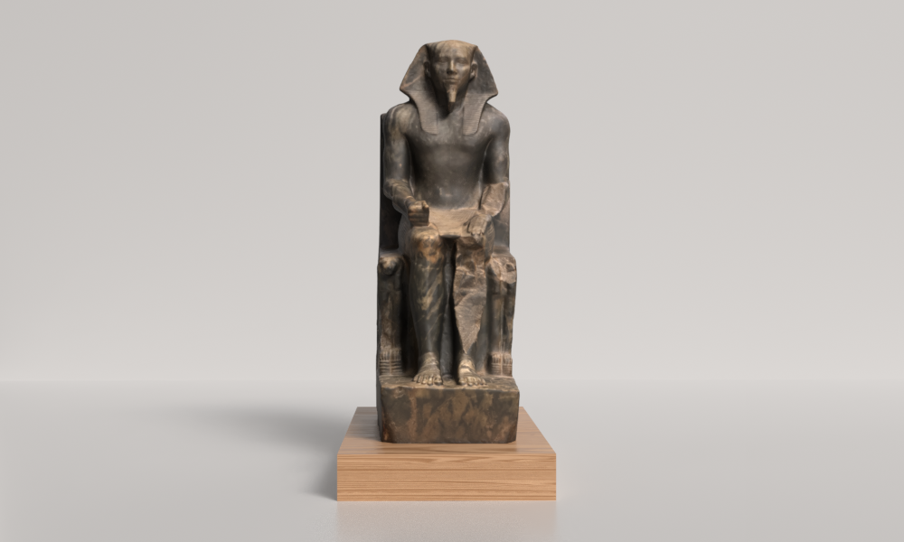
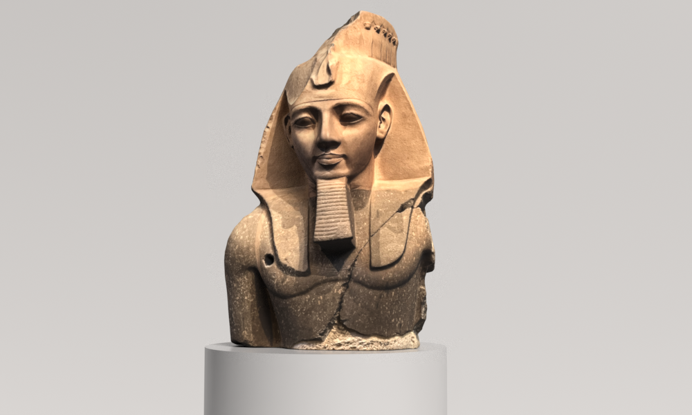
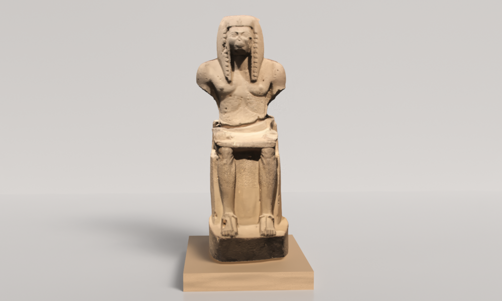

Step Into
The Kingdom of Ancient Egypt
Welcome to our virtual museum, where the past comes to life through cutting-edge technology and immersive storytelling. Explore the fascinating legacies of four iconic Egyptian kings — Khafre, Amenemhat III, Ramesses II, and Ramesses III — brought to you in stunning 3D detail.
Each model offers a window into the grandeur of ancient Egypt, showcasing the artistry, power, and influence of these legendary pharaohs. With interactive 3D displays, you can examine intricate details, learn about their history, and uncover the stories behind their reigns.
Whether you’re a history enthusiast, a student, or simply curious, this website invites you to embark on a journey through time and experience the wonders of Egypt like never before.
Dynasties of Egypt
Old Kingdom
(ca. 2686-2181 BC)Middle Kingdom
(ca. 2055-1650 BC)Amenemhat III
(ca. 1860-1814 BCE, 12th Dynasty)New Kingdom
(ca. 1550-1069 BC)Artifacts of Egyptian Kingdom
Seated Statue of Khafre
(ca. 2613–2498 BCE, 4th Dynasty)

Khafre, a prominent pharaoh of the 4th Dynasty, ruled Egypt during the Old Kingdom, around 2570 BC. He is best known for his enduring contributions to the Giza Plateau, including the construction of the second-largest pyramid and the iconic Great Sphinx, which is thought to bear his likeness. Artifacts from his reign, such as the seated diorite statue, emphasize his divine authority and enduring legacy. Khafre’s rule symbolizes the architectural and cultural advancements of ancient Egypt’s pyramid age.
3D model viewer
About the model
- Dimensions: Approximately 1.68 meters tall (~5.5 feet)
- Provenance: Discovered in the Valley Temple of Khafre, Giza Plateau.
- Material: Diorite (a durable and prestigious stone symbolizing permanence).
- Current Location: Egyptian Museum, Cairo.
- Notes: This iconic statue portrays Khafre seated on a throne with the falcon god Horus protecting him from behind. The craftsmanship reflects the artistry and divine symbolism of the Old Kingdom.
Granite Head of Amenemhat III
(ca. 1991-1803 BCE, 12th Dynasty)

Amenemhat III was a pharaoh of the 12th Dynasty who ruled Egypt from 1860 to 1814 BC. A granite head from a colossal statue of the king wearing the nemes headdress and uraeus was found in the Temple of Bastet at Bubastis. Beyond the information in the sources, I know that Amenemhat III is known for his ambitious building projects, including his pyramid complex in general and the development of the Fayum Oasis. His reign is considered a golden age of the Middle Kingdom.
3D model viewer
About the model
- Dimensions: Fragment; the original colossal statue is estimated to have been over 4 meters tall (~6.5 feet).
- Provenance: Found in the Temple of Bastet at Bubastis.
- Material: Granite.
- Current Location: British Museum, London.
- Notes: This head features the nemes headdress and uraeus, emphasizing Amenemhat III’s royal authority. His statues are celebrated for their realism, reflecting the artistic tendencies of the Middle Kingdom.
Colossal Statue of Ramesses II
(ca. 1292-1189 BCE, 19th Dynasty)

Ramesses II, also known as Ramesses the Great, reigned during the 19th Dynasty from 1279 to 1213 BC. Renowned for his military prowess and diplomatic achievements, he secured Egypt’s borders and signed one of the world’s earliest peace treaties with the Hittites. His architectural legacy includes the magnificent temples of Abu Simbel and the Ramesseum. Ramesses II’s reign marked a period of unparalleled prosperity and cultural renaissance in Egypt’s New Kingdom.
3D model viewer
About the model
- Dimensions: Approximately 11 meters tall (~36 feet).
- Provenance: Originally stood at the Great Temple of Ptah in Memphis.
- Material: Red granite.
- Current Location: Grand Egyptian Museum (Giza). Previously displayed in Ramses Square, Cairo.
- Notes: This towering statue exemplifies Ramesses II’s grandeur and is one of the many colossal representations of him found throughout Egypt. Its relocation highlights its significance as a cultural artifact.
SStanding Statue of Ramesses III
(ca. 1189-1069 BCE, 20th Dynasty)

Ramesses III, a pharaoh of the 20th Dynasty, ruled Egypt from 1186 to 1155 BC. He is celebrated for his decisive victories over the Sea Peoples, preserving Egypt’s stability during a time of widespread upheaval. His mortuary temple at Medinet Habu is among the most well-preserved and provides invaluable insights into New Kingdom art and religious practices. Despite challenges late in his reign, Ramesses III’s military and administrative efforts ensured his lasting reputation as Egypt’s last great pharaoh.
3D model viewer
About the model
- Dimensions: Approximately 3 meters tall (~10 feet).
- Provenance: Medinet Habu (mortuary temple).
- Material: Sandstone.
- Current Location: Luxor Museum, Luxor.
- Notes: This statue depicts Ramesses III in a traditional standing pose, emphasizing his role as a warrior and protector. It is part of the impressive collection of artifacts from his mortuary temple, which is richly adorned with inscriptions and reliefs.